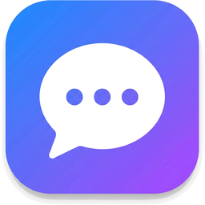

мессенджер · сервер в телефоне
Поднимите сервер — и сможете переписываться с телефона и компьютера, а друзья в той же сети Wi‑Fi подключатся по адресу ниже.
—
—
--tunnel).Если сервер запущен на компьютере друга (или у вас дома на ПК), введите адрес — приложение откроет мессенджер к нему.